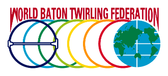
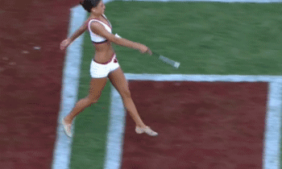

Le Origini del Twirling |
La World Baton Twirling Federation (WBTF) nasce a Londra nell'ottobre del 1977 grazie all'impegno della federazione italiana e di quella americana.
Nell'aprile del 1978 vengono approvati Statuto e Atto costitutivo a Las Palmas nelle Isole Canarie. Il primo meeting mondiale si tenne a Venezia in Piazza San Marco fra il 31 marzo e il 1º aprile del 1979.
Oltre all'Italia e agli Stati Uniti d'America, attualmente fanno parte della WBTF: Australia, Belgio, Brasile, Canada, Spagna, Croazia, Inghilterra, Francia, Germania, Ungheria, Irlanda, Giappone, Paesi Bassi, Norvegia, Scozia, Seychelles, Slovenia, Sudafrica, Svezia e Svizzera.
Inoltre, 15 di questi Paesi fanno parte anche della federazione europea di twirling denominata CETB, Confédération Européenne de Twirling Bâton.
Viene fondata nel 1978 dalle federazioni nazionali di Belgio, Francia, Germania, Inghilterra, Italia, Lussemburgo e Svizzera, con l'obiettivo di diffondere il twirling nel Continente.
Attualmente sono due le federazioni mondiali che organizzano competizioni di twirling:
● World Baton Twirling Federation, riconosciuta dal Comitato Olimpico Internazionale;
● National Baton Twirling Association, non riconosciuta dal Comitato Olimpico Internazionale.
|  |
Descrizione sport
Il TWIRLING è uno sport per alcuni aspetti simile alla ginnastica ritmica e artistica, ma che tuttavia presenta alcuni elementi che lo caratterizzano in maniera fondamentale, in modo particolare l’utilizzo di un “bastone”. Questa è una disciplina agonistica tecnico-combinatoria che esalta i fattori fisici individuali, mettendo in evidenza l’aspetto estetico del movimento. Unisce a movimenti propri della danza, ginnastica ritmica ed artistica, l’uso di un bastone che viene lanciato in aria o fatto roteare sul corpo.
|  |